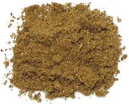

 |
XakMexico, Yucatán - Xak | ||||
| Makes: Effort: Sched: DoAhead: |
3 T ** 4 min Yes |
The Mayan region is the only part of Mexico where spice mixes and pastes are much used, but recipes are hardly standardized. Xak (say "chak") actually just means "stuff ground up". | |||
|
3 1 1 1 1/4 2 |
in t t t t t |
Cinnamon stick (1) Peppercorns, black Allspice berries Cloves Cumin seeds Oregano, dried (2) |
This recipe is fairly typical for Xak that's used mostly with chicken. Make - (20 min)
|